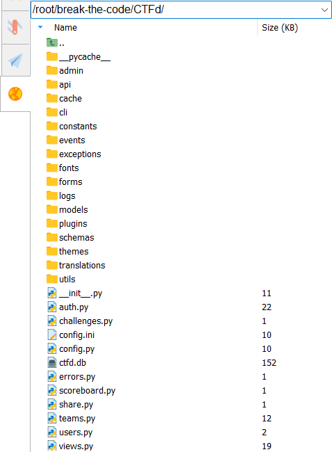
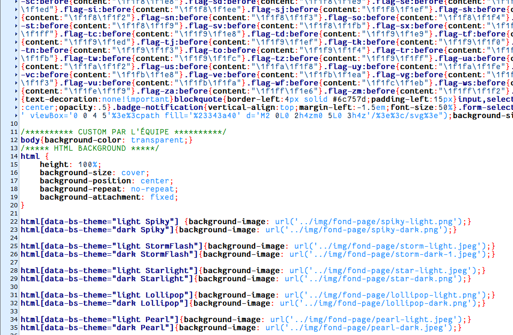

Nous avons débuté ce projet par une analyse de l'existant. Cette étape nous a permis de comparer les plateformes existantes afin d’identifier celle qui correspondrait le mieux à nos besoins et à ceux du projet. Après cette étude et des échanges avec notre client, nous avons choisi la plateforme CTFd, principalement pour sa flexibilité et ses fonctionnalités de base adaptées aux jeux CTF.
Intégration d'application
Une fois le choix validé, nous avons pris le temps de comprendre l’architecture technique de CTFd, en explorant son code et ses mécanismes, tout en nous familiarisant avec des outils et concepts nouveaux pour nous, comme Docker.
Cette étape nous a permis d’adapter la plateforme en intégrant des fonctionnalités spécifiques au projet.


Nous avons pu finalement installer, configurer et modifier la plateforme selon les besoins de l’association et les exigences du projet.
Ces ajustements ont permis de transformer CTFd en un projet sur mesure, d'autant plus que nous avons choisi de créer une histoire et que chaque catégorie suit un des personnages.
Nous avons donc une plateforme fonctionnelle et alignée avec les objectifs définis par le client, que nous avons continué à modifier et àaméliorer tout au long du projet.
A propos du projet
Versionning : GitLab
Equipe : 5 personnes
Outils de développement : HTML/CSS
Durée du projet : du 13 septembre 2024 au 10 janvier 2025 : 4 mois
Communication : GoogleDocs, réunions, discussions, Discord